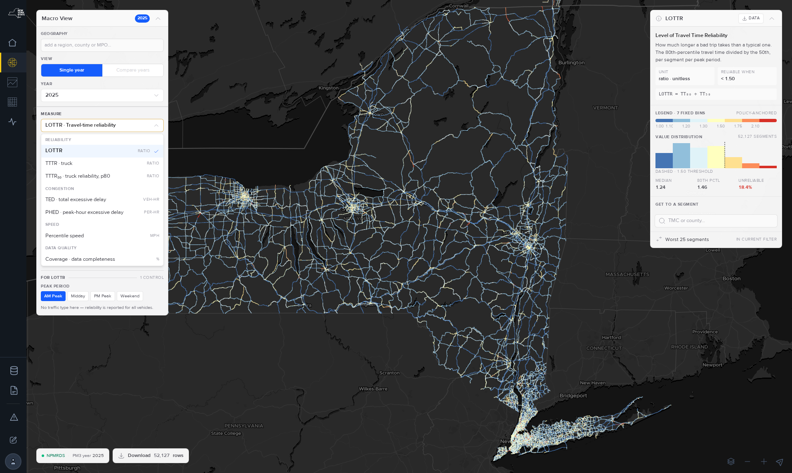

Every measure this site publishes, what it answers, how it is computed — and the choices behind it, because most of these numbers required a decision that could reasonably have gone another way. Where a measure is fragile, thin, or easy to misread, this page says so rather than leaving you to find out.
Read this first. Two different measure families share the same names, and telling them apart changes what a number means.
LOTTR, TTTR and PHED are federally defined measures under MAP-21 (23 CFR 490). New York submits them to FHWA every year. This site also computes an analytical version of the same measures — same probe feed, same segments, deliberately different choices — so that questions the federal formula cannot answer can still be answered honestly.
They are separate pipelines that no longer move together. The numbers will not always agree, and that is by design.
| federal submittal | this site’s analytical series | |
|---|---|---|
| Pipeline | map21 | pm3 |
| Measures | LOTTR, TTTR, PHED — and nothing else | Those three plus TTTR₀₀, delay variants, percentile speed, coverage |
| Rules | Fixed by 23 CFR 490. Frozen — it does not change. | Free to improve on the evidence, and documented when it does |
| Use it for | Anything reported to FHWA | Analysis, prioritisation, corridor and regional work |
| Where to get it | MAP-21 pages → | Macro view → · Reports → |
If you are filling in a federal form, use the MAP-21 pages. The measures on this page are the analytical series and are not the compliant figure.

Seven measures are published today. Each card answers the same five questions in the same order: what it answers, how it is computed, the choices made, how much to trust it, and where it breaks down. Descriptions are the same text the tool itself shows.
How much longer a bad trip takes than a typical one. The 80th-percentile travel time divided by the 50th, per segment per peak period.
LOTTR = TT₈₀ ÷ TT₅₀
per segment × period × year
all-vehicle travel times
15-minute reporting binsA precision band is published on every row. Measured by down-sampling real segments: the spread of the ratio falls from ±0.079 at 25 observations to ±0.007 at 1,000. The bar for ±0.05 precision is 707 bins, and 85.0% of segments clear it.
pmp window is 16:00–19:59 — not the same as PHED’s. See § 05.The same question for freight, at a stricter percentile. The 95th-percentile truck travel time divided by the 50th, per segment per peak period.
TTTR = TT₉₅ ÷ TT₅₀
freight-truck travel times,
falling back to all-vehicle
where truck data is missingA per-segment TTTR never meets its own precision bar. ±0.05 precision needs 57,832 overnight bins; an overnight year contains 14,600. The bar is unreachable by construction, and only 1.15% of segments clear it in any period. That is the honest signal, not a typo.
The same ratio as TTTR but taken at the 80th percentile instead of the 95th. Reads lower than TTTR by construction; its value is that it needs a far smaller sample for the same confidence, which matters because truck coverage is thin.
TTTR₈₀ = p80(TT) / p50(TT)
same stream, same bins,
same calculator as TTTR —
read at a shallower percentileIt reaches the same ±0.05 precision bar at 195 bins against TTTR’s 57,832 — 297× cheaper. 68.8% of segments clear it, against TTTR’s 1.15%.
The same, restricted to peak hours and counted per person. Excessive delay is the extra time spent under a speed threshold — 20 mph or 60% of the reference speed, whichever is greater.
threshold = max(0.6 × reference, 20 mph)
delay = max(0, TT_obs − TT_thr)
PHED = Σ delay × volume × occupancy
peak hours onlyNo precision band is published for the delay family, and that is deliberate: the down-sampling experiment that produced the reliability bands was never run for delay, and a band without a measurement behind it would be a guess. No measured curve → no column → no claim.
pmp but computes it over 15:00–18:59, unlike LOTTR/TTTR. See § 05.How many vehicle-hours are lost below the delay threshold speed. Excessive delay is the extra time spent under a speed threshold — 20 mph or 60% of the reference speed, whichever is greater.
threshold = max(0.6 × reference, 20 mph)
TED = Σ (TT − TT_threshold) × volume
all hours, not just peakNo precision band, for the same reason as PHED. TED is, however, the measure most exposed to outliers of anything published here: grouping segments by their own tail weight moves median TED across a 37× range, against LOTTR’s near-immunity.
What speed a chosen share of trips beat — the floating-car view. The chosen percentile of observed speed over all travel times.
speed = quantile(speed, p)
speed = miles / travel_time × 3600
p ∈ 5, 20, 25, 50, 75, 80, 85, 95No precision band is published. The percentile depth is the thing to watch: the 5th and 95th read a thin tail and are far less stable than the median on a sparse segment.
Two percentages on the same 0-100 scale. Bins reporting is how much of a bin-based measure’s own input arrived — the sample size its percentiles rest on. Epochs reporting is how much of the raw 5-minute feed arrived, and is lower by construction, since a bin counts as present when any one of its three epochs did.
coverage = present / possible
bins reporting — the sample a
percentile rests on
epochs reporting — the raw 5-minute feedThis is the measure to read first. Coverage is not stationary — there are nine distinct coverage eras between 2017 and 2026 — and it confounds everything else on the map.
Several delay variants are published so that different questions can be answered honestly. That is not an invitation to choose freely — most combinations are wrong for most purposes. Pick from this table and nothing else.
| your question | use | why |
|---|---|---|
| Default. How much delay, and is it getting worse? | anchored free-flow | A fixed reference, so year-over-year change is real rather than partly the yardstick moving. Keeps the floor, so it stays comparable to the federal figure. |
| Comparing delay across functional classes — where is congestion worst? | relative (unfloored) | Required, not optional. With the floor in place an arterial figure is ~90% floored and a freeway’s ~3%, so a floored cross-class comparison compares the floor, not congestion. |
| Delay against the posted speed limit | speed-limit threshold | The federal formula. Note this measures degradation from a policy number — on roads that cannot reach their posted limit it reports delay during normal operation. |
| Anything reported to FHWA | the MAP-21 pages | That pipeline is frozen and is the compliant path. This one is deliberately different. Go there → |
| Comparing to previously published figures | own-year free-flow | Transitional only. Its reference tracks prevailing traffic almost perfectly, so it structurally cannot measure multi-year deterioration. Do not start new analysis on it. |
Pretending otherwise would be the real error. Two axes move independently: which reference is used governs whether change over time is measurable, and whether the floor applies governs whether classes are comparable to each other. The default above answers the common question; the others answer specific ones.
The single most common way to misread this data is to treat a change in how much data arrived as a change in traffic.
distinct feed regimes between 2017 and 2026. Four of the nine published years blend two eras.
range across published years. Not a trend — a property of the feed.
truck coverage roughly tripled over the period. Any truck trend must control for this.
Thinning the probes behind a bin inflates the reliability ratios, while removing reporting bins deflates the delay measures. Same cause, opposite signs. So if reliability and delay appear to disagree across years, check coverage before concluding anything about the road.
The rule: compare within a coverage era, or state that you are crossing one. Every published row carries the coverage columns needed to check.
Both of these are known, measured, and easy to walk into.
Delay scales linearly in traffic volume, and volume comes from an estimated AADT dataset with its own revision cycle. On a fixed panel of identical segments, total directional AADT falls 14.9% between 2021 and 2022 — and rose 2.3% in 2020, meaning the series does not register COVID at all. Traffic does not do that; a revision cycle does.
| year | directional AADT, fixed panel | vs 2017 |
|---|---|---|
| 2019 | 272.07M | +1.5% |
| 2020 | 274.06M | +2.3% |
| 2021 | 273.94M | +2.2% |
| 2022 | 227.92M | −14.9% |
What to do: read a multi-year delay series per unit of AADT, or pin a single AADT vintage. Normalised this way the 2021→2022 step falls from −18.5% to −2.2%. Single-year and cross-sectional comparisons are unaffected — within one year there is one vintage.
The download package flags this automatically when a requested year range straddles the boundary.
LOTTR and TTTR compute their PM peak over 16:00–19:59. PHED computes its PM peak over 15:00–18:59 — and publishes it under the same pmp label.
Do not join a LOTTR PM-peak figure to a PHED PM-peak figure and assume the same window. The labels match; the hours do not. This predates the current pipeline and is not corrected, because renaming a published column would break every existing consumer. Coverage is exempt — it publishes both windows separately, so its denominators are unambiguous.
Three measures are declared but not yet computed. They are deliberately kept out of the measure menu — you cannot select one and get an empty map — while still being listed in the macro view’s own measure reference, so the gap is visible rather than silent.
How fast the road runs when nothing is in the way. The 85th percentile of off-peak observed speed.
Computed internally today as the reference behind the delay family, but not yet published as a measure in its own right.
What the traffic on this segment puts into the air. A speed-binned emission rate applied to the segment’s vehicle-miles travelled.
Blocked on confirming the emission-rate table with NYSDOT. The rate curve is fleet-dependent, so the fleet year it represents will be published alongside every value.
Network metadata itself — functional class, AADT, ownership. Coloured straight from a field joined off the network table; no measure controls.
Earlier versions of this documentation listed measures the current tool no longer offers. If you used one of them, here is what happened to it.
| measure | status | what to use instead |
|---|---|---|
| Planning Time Index (PTI), Buffer Index, Travel Time Index | Not currently computed | Percentile speed gives the underlying distribution. Reinstating this family is under evaluation. |
| RIS attributes — AADT variants, posted speed, DDHV, adjusted rated capacity, volume-to-capacity, K and D factors | Not currently exposed | The Attributes measure (§ 06) is the intended home for these. |
| Percent bins reporting | Restored | Now published as the Data coverage measure, per stream per period. |